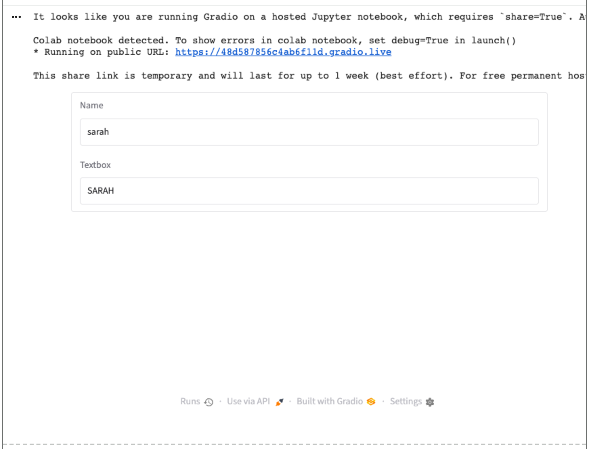
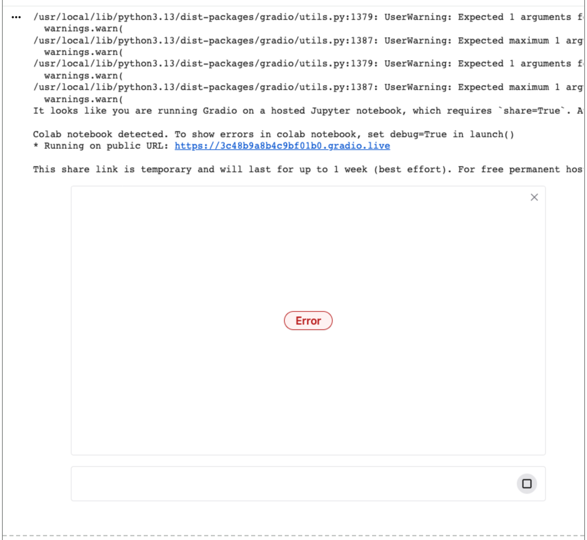
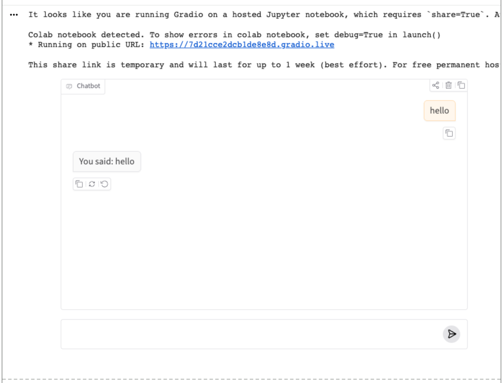
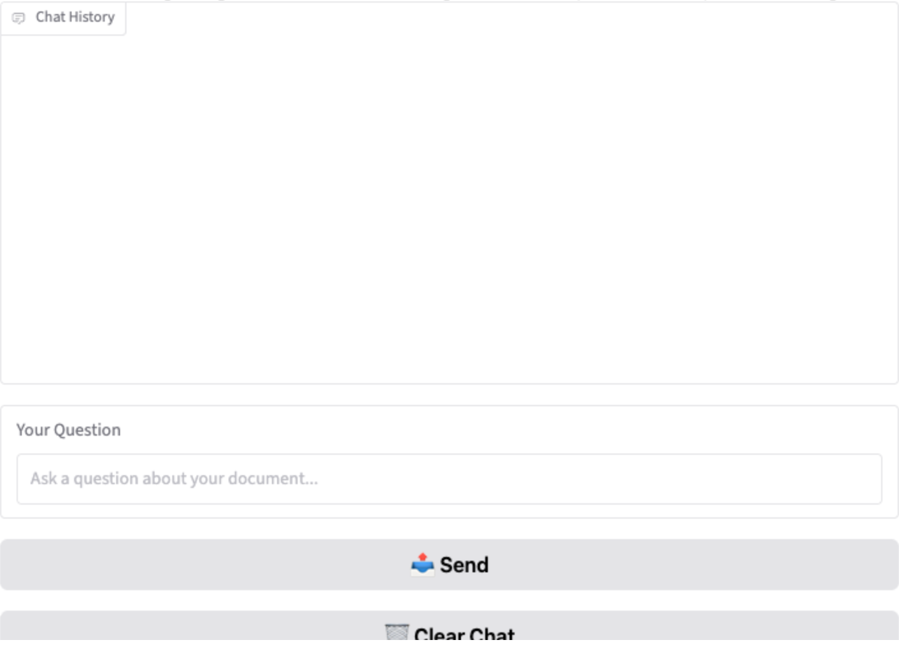
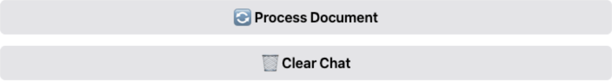
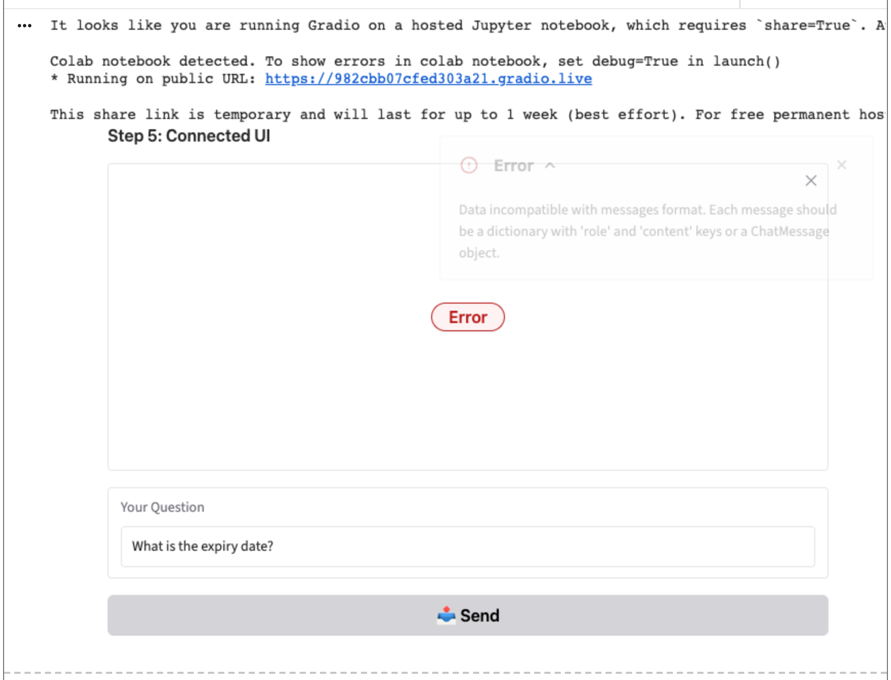
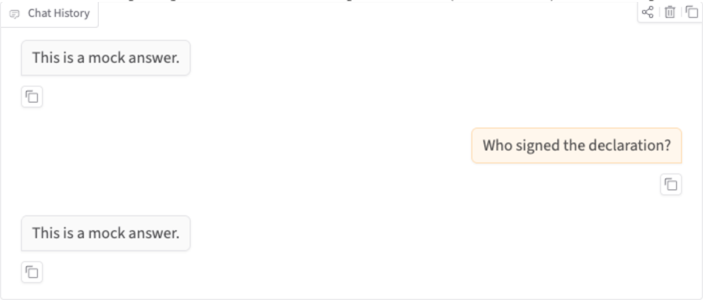

(opens the picture full size in a new tab)
(opens the picture full size in a new tab)Go back to your copy of the Intro to Gradio notebook from the last reading. You skipped sections 5 and 6 there. Now you'll run them.
Lost your copy? Open the notebook below and click File → Save a copy in Drive. Work in the copy that opens.
Intro to Gradio (Pfizer 3.0) (Colab notebook) (opens in a new tab)If Colab disconnected since the last reading, go to the top of your notebook and run the cells under 1. Installing Gradio and 2. Your First Gradio Demo again. The second one loads Gradio as gr, which sections 5 and 6 use.
Find the heading 5. Using gr.Blocks for Custom Layouts and press Run on the cell under it:
with gr.Blocks() as demo4: name = gr.Textbox(label="Name") out = gr.Textbox() name.change(fn=lambda x: x.upper(), inputs=name, outputs=out)demo4.launch()What this code does:
with gr.Blocks() as demo4: opens a blank canvas. Everything indented under it goes on the page.name and out are two text boxes, one under the other.name.change(...) runs a function every time the text in name changes, and shows the result in out.lambda x: x.upper() is a one-line function with no name. It takes the text x and gives it back in capital letters.demo4.launch() starts the app under the cell.Type sarah in the Name box. The box under it fills in capital letters as you type.
What you'll see in Colab:

(opens the picture full size in a new tab)Find the heading 6. Creating a Chatbot with gr.ChatInterface and press Run on the cell under it:
def bot(msg, history): return "You said: " + msgdemo5 = gr.ChatInterface(bot)demo5.launch()We changed one line of the team's notebook: def bot(msg): became def bot(msg, history):. gr.ChatInterface hands your function two things, the new message and the chat so far. Today's Gradio shows an Error in the chat when the function takes only one. If your copy from the last reading still says def bot(msg):, add , history and run the cell again. Without the change, you'll see this:

(opens the picture full size in a new tab)What this code does:
bot gets the message (msg) and the chat so far (history), and sends back "You said: " plus the message.gr.ChatInterface(bot) builds a whole chat window around that one function.Type hello in the message box and press Enter. Your message and the bot's reply appear in the chat, one under the other.
What you'll see in Colab:

(opens the picture full size in a new tab)Now you'll build the chat window Sarah asked for. You can refer to this Colab notebook for the complete implementation.
Gradio Chatbot (Pfizer 3.0) (Colab notebook) (opens in a new tab)This sets up the Gradio "canvas" where you'll add and design all your UI components.
import gradio as grwith gr.Blocks(title="Document Q&A Chatbot") as demo: # UI components go here passdemo.launch()Gradio Blocks lets you arrange UI elements using layout containers like rows and columns, a bit like building with Lego!
pass is Python for "do nothing here yet". It holds the place until you add components.
Now you'll create a chat window to show the conversation and a textbox for user questions.
chatbot is for displaying the conversation history, including both the user's questions and the AI's answers.textbox is for letting the user type their question or message before sending it to the chatbot.with gr.Column(scale=2): chatbot = gr.Chatbot(label="Chat History", height=500) user_input = gr.Textbox( placeholder="Ask a question about your document...", label="Your Question" ) send_btn = gr.Button("📤 Send")gr.Column(scale=2) stacks its parts in a column. scale=2 makes it twice as wide as a column with scale=1.

(opens the picture full size in a new tab)Now, whenever Sarah types something, it'll appear in the chat window, and the bot's reply will show up right under it, like ChatGPT.
Your RAG pipeline can't answer questions without documents. Now we'll use the gr.File component to let users upload a PDF document they want to ask questions about.
with gr.Column(scale=1): pdf_input = gr.File(label="📄 Upload PDF", file_types=[".pdf"])file_types=[".pdf"] tells the uploader to accept PDF files.
This file will be passed to your Python function that processes and chunks the PDF for question answering.
Two small but important tools:
process_btn = gr.Button("🔄 Process Document")clear_btn = gr.Button("🗑️ Clear Chat")
(opens the picture full size in a new tab)These will be connected to your custom logic functions (like building the index or resetting the chat).
Right now, these buttons look nice but don't do anything.
Let's hook them up to the Python functions:
# Sample logic functionsdef process_pdf(file): return "PDF processed successfully!"def handle_chat(message, history): return history + [{"role": "user", "content": message}, {"role": "assistant", "content": "This is a mock answer."}]We changed the last line, in the code above and in your copy of the notebook. In the reading, handle_chat added the question and answer as a pair, (message, "This is a mock answer."). Today's Gradio no longer accepts pairs. It wants each message as a dictionary with a "role" (who said it, "user" or "assistant") and its "content" (the words). With the old line, Send shows this:

(opens the picture full size in a new tab)What this code does:
process_pdf is a stand-in for now. It only returns a message. In Step 2 of this project, it starts reading the PDF.handle_chat takes the question and the chat so far, and gives back the chat with the question and a mock answer added.Now connect the components using Gradio's .click() and .submit() functions:
process_btn.click(process_pdf, inputs=pdf_input, outputs=None)send_btn.click(handle_chat, inputs=[user_input, chatbot], outputs=chatbot)user_input.submit(handle_chat, inputs=[user_input, chatbot], outputs=chatbot)clear_btn.click(lambda: [], outputs=[chatbot])What this code does:
.click(...) runs a function when a button is clicked: first the function, then inputs (what it gets) and outputs (where its answer goes).user_input.submit(...) does the same when you press Enter in the question box.outputs=None means process_pdf's message isn't shown anywhere on the page.lambda: [] is a one-line function with no name that gives back an empty list, so the chat empties.Press Run on the one code cell in your notebook. It holds Steps 1 to 5 together:
import gradio as grdef process_pdf(file): return "PDF processed successfully!"def handle_chat(message, history): return history + [{"role": "user", "content": message}, {"role": "assistant", "content": "This is a mock answer."}]with gr.Blocks(title="Step 5: Full Functioning UI") as demo: gr.Markdown("### Step 5: Connected UI") with gr.Column(scale=2): chatbot = gr.Chatbot(label="Chat History", height=300) user_input = gr.Textbox( placeholder="Ask a question about your document...", label="Your Question" ) send_btn = gr.Button("📤 Send") clear_btn = gr.Button("🗑️ Clear Chat") with gr.Column(scale=1): pdf_input = gr.File(label="📄 Upload PDF", file_types=[".pdf"]) process_btn = gr.Button("🔄 Process Document") process_btn.click(process_pdf, inputs=pdf_input, outputs=None) send_btn.click(handle_chat, inputs=[user_input, chatbot], outputs=chatbot) user_input.submit(handle_chat, inputs=[user_input, chatbot], outputs=chatbot) clear_btn.click(lambda: [], outputs=chatbot)demo.launch()What you'll see in Colab:
(opens the picture full size in a new tab)The app appears under the cell. It also prints a public link that ends in gradio.live, so you can open the same app in a new tab.
Three small differences from the slides: the chat window is 300 pixels tall instead of 500, the Clear Chat button sits under Send, and the app has a title line, Step 5: Connected UI.
What is the expiry date?, and click Send.What you'll see in Colab:

(opens the picture full size in a new tab)Each question gets the same reply, This is a mock answer., because handle_chat doesn't read the PDF yet. You'll connect it to your RAG pipeline in Step 2 of this project.
Your question stays in the box after you send it. Delete it before you type the next one.
Click Clear Chat.
What you'll see in Colab:
The chat is empty again, ready for the next question.
You now have:
And most importantly, you just built a real AI app interface with almost no frontend code.
The frontend is the part of the app you see and click.
Key Takeaway
Use gr.Blocks when you need full control over layout and workflow.
Always connect UI components (Chatbot, Textbox, File, Button) to backend Python functions using .click() and .submit().
A clean UI + connected logic = a usable QA tool for reviewing pharmaceutical documents.
Let's do a quick walk-through of the components we've been using… This will help you with the task later:
| Component | What It Does |
|---|---|
gr.Blocks() | Creates the overall layout container for your web app |
gr.Chatbot() | Displays the chat history between the user and the AI |
gr.Textbox() | Lets users type their questions |
gr.File() | Uploads the PDF that will be processed for Q&A |
gr.Button() | Triggers actions like processing a PDF or sending a message |
send_btn.click() / user_input.submit() | Connects buttons/textbox to your Python functions |
clear_btn.click() | Resets the chat history when clicked |
process_pdf() | Your custom function that processes the uploaded PDF |
handle_chat() | Your function that takes the user’s message and returns a response |
demo.launch() | Starts the Gradio app so it runs in the browser |